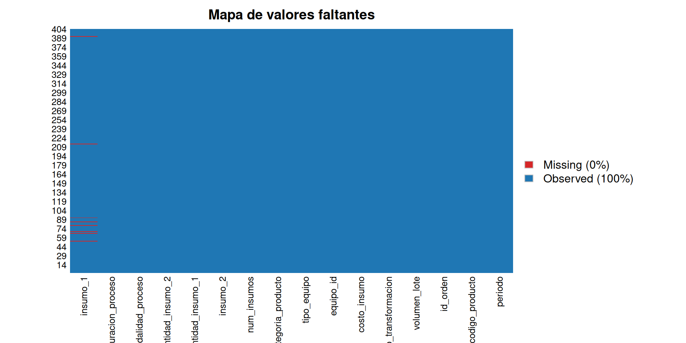

Capítulo 4 Metodología
4.1 Diseño del estudio
Este trabajo corresponde a un estudio observacional, retrospectivo y transversal sobre el proceso productivo de una empresa farmacéutica colombiana. Es observacional porque no se manipulan variables sobre el proceso; retrospectivo porque utiliza registros generados durante operaciones ya ejecutadas; y transversal porque captura información de un período acotado sin seguimiento longitudinal de unidades individuales.
La muestra está conformada por 404 órdenes de producción registradas en el sistema ERP durante el período de estudio, extraídas mediante consultas SQL sobre las tablas transaccionales de órdenes, consumos y tiempos, junto con la tabla de costos por período y el maestro de productos. La consolidación se realizó en Excel y posteriormente se exportó a formato CSV para garantizar reproducibilidad y trazabilidad. Las 404 órdenes constituyen una muestra representativa del proceso productivo, en la medida en que cubren la variedad de productos, equipos, modalidades y tamaños de lote habituales del proceso.
Limitaciones conocidas del dataset:
- Sesgo de selección: se excluyen registros de órdenes anuladas, abortadas o reprocesadas, limitándose exclusivamente a procesos completados.
- Variabilidad operativa: la calidad del registro depende de la disciplina del operario en el momento de cierre de la orden en el ERP, lo cual introduce una fuente de error de medición no cuantificable a priori.
- Imprecisión en consumos: los insumos se registran en litros equivalentes a un envase estándar; las fracciones menores se estiman visualmente ante la falta de un proceso de pesaje, lo que afecta la precisión de las cantidades reportadas.
- Base de valoración: los costos se expresan en unidades monetarias por producto, calculados según la tarifa de costeo del período reportado.
Aspectos éticos y de confidencialidad. Los datos provienen de operaciones industriales reales y contienen información sensible para la empresa. Por esta razón, los identificadores de producto, máquina e insumo fueron anonimizados en origen mediante codificación alfanumérica que preserva la estructura analítica sin revelar identidades comerciales.
Software. Los análisis se realizan en R versión 4 o superior, con los paquetes tidyverse para manipulación y visualización, Amelia para diagnóstico de valores faltantes, janitor como guardia defensiva en limpieza de nombres, kableExtra para presentación de tablas, y patchwork y gridExtra para composición de gráficos. Todos los análisis son completamente reproducibles a partir del código fuente disponible en el repositorio.
4.2 Extracción, transformación y carga (ETL)
4.2.1 Carga del conjunto de datos
El archivo CSV exportado desde el consolidado Excel utiliza punto y coma (;) como separador de columnas y punto (.) como separador decimal.
4.2.2 Verificación de la lectura
Verificamos que el archivo se leyó correctamente inspeccionando las primeras filas, las dimensiones, los nombres de las columnas y la estructura de tipos detectados.
## # A tibble: 5 × 16
## periodo codigo_producto id_orden volumen_lote costo_transformacion
## <dbl> <chr> <dbl> <dbl> <dbl>
## 1 202501 P05747 546009 7440 24.6
## 2 202501 P06976 551645 1680 36.5
## 3 202501 P07920 548767 1556 22.3
## 4 202501 P07767 552185 2700 14.2
## 5 202501 P07576 546482 2578 18.2
## # ℹ 11 more variables: costo_insumo <dbl>, equipo_id <chr>, tipo_equipo <chr>,
## # categoria_producto <dbl>, num_insumos <dbl>, insumo_1 <chr>,
## # insumo_2 <chr>, cantidad_insumo_1 <dbl>, cantidad_insumo_2 <dbl>,
## # modalidad_proceso <chr>, duracion_proceso <dbl>## [1] 404 16## [1] "periodo" "codigo_producto" "id_orden"
## [4] "volumen_lote" "costo_transformacion" "costo_insumo"
## [7] "equipo_id" "tipo_equipo" "categoria_producto"
## [10] "num_insumos" "insumo_1" "insumo_2"
## [13] "cantidad_insumo_1" "cantidad_insumo_2" "modalidad_proceso"
## [16] "duracion_proceso"## spc_tbl_ [404 × 16] (S3: spec_tbl_df/tbl_df/tbl/data.frame)
## $ periodo : num [1:404] 202501 202501 202501 202501 202501 ...
## $ codigo_producto : chr [1:404] "P05747" "P06976" "P07920" "P07767" ...
## $ id_orden : num [1:404] 546009 551645 548767 552185 546482 ...
## $ volumen_lote : num [1:404] 7440 1680 1556 2700 2578 ...
## $ costo_transformacion: num [1:404] 24.6 36.5 22.3 14.2 18.2 ...
## $ costo_insumo : num [1:404] 4.18 1.59 2.15 3.84 2.08 ...
## $ equipo_id : chr [1:404] "M08" "M02" "M14" "M13" ...
## $ tipo_equipo : chr [1:404] "A1" "B2" "A1" "A1" ...
## $ categoria_producto : num [1:404] 7 5 5 5 5 5 5 5 5 4 ...
## $ num_insumos : num [1:404] 1 2 1 1 2 2 2 2 1 1 ...
## $ insumo_1 : chr [1:404] "B_T" "B_T" "N_O" "B_T" ...
## $ insumo_2 : chr [1:404] NA "N_T" NA NA ...
## $ cantidad_insumo_1 : num [1:404] 6 1.5 0.5 2 2 2 2 2 1.3 2.5 ...
## $ cantidad_insumo_2 : num [1:404] 0 0.05 0 0 0.05 0.05 0.05 0.5 0 0 ...
## $ modalidad_proceso : chr [1:404] "X" "Y" "Y" "X" ...
## $ duracion_proceso : num [1:404] 300 98 100 62 91 ...
## - attr(*, "spec")=
## .. cols(
## .. periodo = col_double(),
## .. codigo_producto = col_character(),
## .. id_orden = col_double(),
## .. volumen_lote = col_double(),
## .. costo_transformacion = col_double(),
## .. costo_insumo = col_double(),
## .. equipo_id = col_character(),
## .. tipo_equipo = col_character(),
## .. categoria_producto = col_double(),
## .. num_insumos = col_double(),
## .. insumo_1 = col_character(),
## .. insumo_2 = col_character(),
## .. cantidad_insumo_1 = col_double(),
## .. cantidad_insumo_2 = col_double(),
## .. modalidad_proceso = col_character(),
## .. duracion_proceso = col_double()
## .. )
## - attr(*, "problems")=<externalptr>El conjunto de datos contiene 404 órdenes de producción y 16 variables, conforme a la definición presentada en el capítulo del diccionario de datos. Los costos costo_transformacion y costo_insumo, así como las cantidades de insumo, se leyeron correctamente como numéricos de tipo double. En la siguiente etapa se ajustan los tipos para que las variables categóricas reflejen su naturaleza estadística real.
El significado, tipo analítico, unidad de medida y rol de cada una de las 16 variables se documenta en detalle en el siguiente capítulo.
4.2.3 Identificación de valores faltantes
Identificamos los valores faltantes por columna mediante dos enfoques complementarios. El primero entrega el conteo absoluto por variable; el segundo proporciona una visualización del patrón de ausencias.
n_filas_inicial <- nrow(datos)
n_vars <- ncol(datos)
conteo_na <- datos %>%
summarise(across(everything(), ~ sum(is.na(.)))) %>%
pivot_longer(everything(), names_to = "variable", values_to = "n_na")
view(conteo_na)
total_na <- conteo_na %>%
filter(n_na > 0)
total_na <- sum(conteo_na$n_na)El conteo absoluto muestra un total de 287 valores faltantes distribuidos en 2 variables del data set (insumo_1 e insumo_2).
n_na_insumo_1 <- conteo_na %>%
filter(variable == "insumo_1") %>%
pull(n_na)
n_na_insumo_2 <- conteo_na %>%
filter(variable == "insumo_2") %>%
pull(n_na)
pct_na_insumo_2 <- round(n_na_insumo_2 / n_filas_inicial * 100, 1)## # A tibble: 1 × 16
## NA_periodo NA_codigo_producto NA_id_orden NA_volumen_lote
## <int> <int> <int> <int>
## 1 0 0 0 0
## # ℹ 12 more variables: NA_costo_transformacion <int>, NA_costo_insumo <int>,
## # NA_equipo_id <int>, NA_tipo_equipo <int>, NA_categoria_producto <int>,
## # NA_num_insumos <int>, NA_insumo_1 <int>, NA_insumo_2 <int>,
## # NA_cantidad_insumo_1 <int>, NA_cantidad_insumo_2 <int>,
## # NA_modalidad_proceso <int>, NA_duracion_proceso <int>
La variable insumo_2 concentra 279 ausencias, equivalentes al 69.1% de las 404 órdenes. Conforme a las consultas SQL de origen, estos NA no representan datos perdidos sino la ausencia estructural de un segundo insumo cuando num_insumos < 2.
La variable insumo_2 concentra 279 ausencias, equivalentes al 69.1% de las 404 órdenes. Conforme a las consultas SQL de origen, estos NA no representan datos perdidos sino la ausencia estructural de un segundo insumo cuando num_insumos < 2.
El resto de variables del dataset no presenta valores faltantes, lo cual es consistente con el proceso de consolidación desde las tablas transaccionales del ERP.
4.2.4 Conversión de tipos
La inspección de la estructura revela que varias variables están almacenadas con tipos que no corresponden a su naturaleza analítica.
- La variable periodo viene como entero YYYYMM; en análisis posteriores se podrá convertir a fecha para análisis de temporalidad, pero en el presente estudio se conserva como texto, dado que no se realizarán análisis de series de tiempo.
- La variable num_insumos, restringida a los valores 0, 1 y 2, se trata como factor ordenado.
- Las variables tipo_equipo, categoria_producto, equipo_id, modalidad_proceso, insumo_1 e insumo_2 se convierten a factor para los análisis inferenciales posteriores.
- La variable insumo_2 requiere además una recodificación explícita de los valores faltantes a la categoría sin_segundo_insumo, dado que el NA no representa un dato perdido sino una característica estructural de la orden (cuando num_insumos < 2).
datos <- datos %>%
mutate(
periodo = as.character(periodo),
num_insumos = factor(num_insumos, levels = c(0, 1, 2), ordered = TRUE),
tipo_equipo = as.factor(tipo_equipo),
categoria_producto = as.factor(categoria_producto),
equipo_id = as.factor(equipo_id),
modalidad_proceso = as.factor(modalidad_proceso),
insumo_1 = as.factor(insumo_1),
insumo_2 = factor(if_else(is.na(insumo_2), "sin_segundo_insumo", insumo_2))
)
str(datos)## tibble [404 × 16] (S3: tbl_df/tbl/data.frame)
## $ periodo : chr [1:404] "202501" "202501" "202501" "202501" ...
## $ codigo_producto : chr [1:404] "P05747" "P06976" "P07920" "P07767" ...
## $ id_orden : num [1:404] 546009 551645 548767 552185 546482 ...
## $ volumen_lote : num [1:404] 7440 1680 1556 2700 2578 ...
## $ costo_transformacion: num [1:404] 24.6 36.5 22.3 14.2 18.2 ...
## $ costo_insumo : num [1:404] 4.18 1.59 2.15 3.84 2.08 ...
## $ equipo_id : Factor w/ 12 levels "M02","M04","M05",..: 4 1 9 8 1 1 1 1 1 6 ...
## $ tipo_equipo : Factor w/ 4 levels "A1","B2","C3",..: 1 2 1 1 2 2 2 2 2 3 ...
## $ categoria_producto : Factor w/ 7 levels "1","2","3","4",..: 7 5 5 5 5 5 5 5 5 4 ...
## $ num_insumos : Ord.factor w/ 3 levels "0"<"1"<"2": 2 3 2 2 3 3 3 3 2 2 ...
## $ insumo_1 : Factor w/ 6 levels "A_T","B_T","N_O",..: 2 2 3 2 2 2 2 2 5 3 ...
## $ insumo_2 : Factor w/ 7 levels "A_T","B_T","N_O",..: 6 4 6 6 7 7 7 7 6 6 ...
## $ cantidad_insumo_1 : num [1:404] 6 1.5 0.5 2 2 2 2 2 1.3 2.5 ...
## $ cantidad_insumo_2 : num [1:404] 0 0.05 0 0 0.05 0.05 0.05 0.5 0 0 ...
## $ modalidad_proceso : Factor w/ 3 levels "X","Y","Z": 1 2 2 1 1 1 1 1 2 1 ...
## $ duracion_proceso : num [1:404] 300 98 100 62 91 ...4.2.5 Eliminación de errores de digitación confirmados
Durante la revisión preliminar del dataset se identificaron registros con num_insumos = 0. Tras consulta con el área de operaciones, se confirmó que se trata de errores de digitación en el registro del ERP: toda orden de producción real requiere al menos un insumo activo, por lo que num_insumos = 0 no corresponde a una configuración operativa válida del proceso. En consecuencia, estos registros se eliminan antes del análisis exploratorio.
Primero cuantificamos cuántos casos afectan:
## # A tibble: 3 × 3
## num_insumos n porcentaje
## <ord> <int> <dbl>
## 1 0 8 1.98
## 2 1 271 67.1
## 3 2 125 30.9Se identificaron 8 órdenes con número de insumos en cero (2% del total de registros) .
A continuación se eliminan los registros con num_insumos = 0:
datos %>%
filter(num_insumos != 0) %>%
mutate(num_insumos = droplevels(num_insumos)) -> datos
dim(datos)## [1] 396 16Después de la eliminación, el dataset analítico queda conformado por 396 órdenes con al menos un insumo registrado.
4.2.6 Consideraciones estructurales de la data
La variable
cantidad_insumo_2reporta el valor cero cuandonum_insumos = 1, es decir, cuando estructuralmente no existe un segundo insumo. Estos ceros no constituyen mediciones de cantidad consumida, sino indicadores de ausencia de la categoría, y deben distinguirse de los ceros que pudieran reportarse como cantidad consumida real en casos donde el insumo sí está presente. Para los análisis posteriores, los estadísticos descriptivos sobre cantidades de insumo se calcularán condicionando sobre la presencia efectiva del insumo correspondiente.Los costos
costo_transformacionycosto_insumose interpretan como unidades monetarias por unidad de producto producida, conforme a la definición del ERP. Esta unidad permite comparaciones directas entre órdenes de cualquier tamaño de lote, sin necesidad de transformaciones por escala de producción.